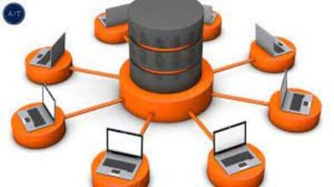

Las empresas manejan muchos datos, ya sean de tipo financiero, personal, de inventario, entre otros.
Es por ello que es aconsejable tenerlos en un formato ordenado y con niveles de acceso para que se pueda encontrar y consultar solo por aquellos autorizados.
Algunas pymes guardan los datos en sistemas de ficheros en textos planos (como por ejemplo, Excel). Sin embargo, cuando empiezan a crecer perciben que este sistema contiene datos redundantes y duplicados
, no es muy seguro y es difícil acceder de forma externa. Entonces, las empresas se plantean almacenar la información en una base de datos. Pero, ¿qué ventajas presenta la base de datos en el almacenamiento frente al sistema de ficheros?

Tipos de base de datos: